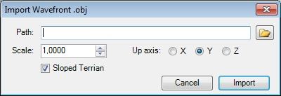
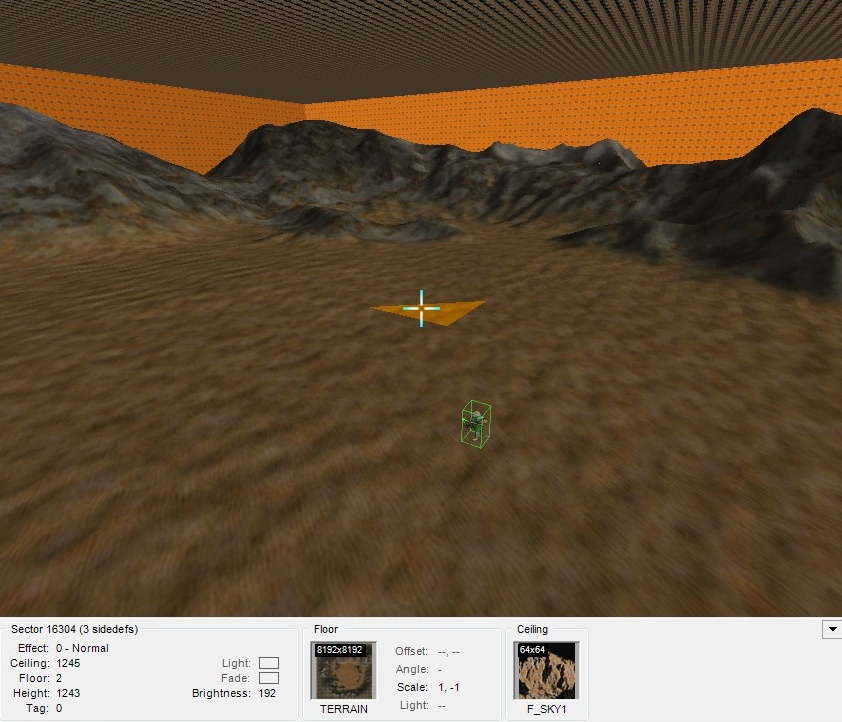
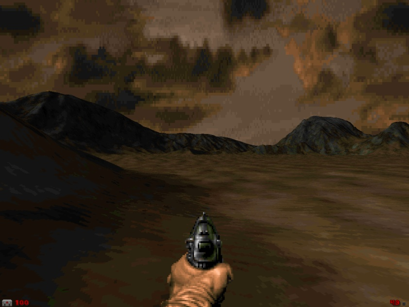

此模式允许你从 Wavefront .obj 模型创建扇区。
菜单路径：文件 -> 导入 -> Wavefront .obj 作为地形。
动作类别：工具。
默认按键：无。
用法：
在你喜欢的 3D 建模软件（Blender、Earth Sculptor 或任何其他能够以 Wavefront .obj 格式保存或导出模型的软件）中创建地形模型
使用 文件 -> 导入 -> Wavefront .obj 作为地形动作将其作为扇区导入。模型中的每个多边形都会转换为一个扇区。


